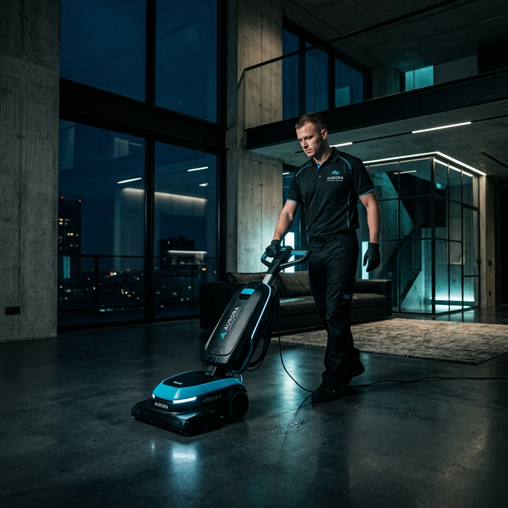

검증된 전담 청소팀 배정
하청 없이 검증된 전담 청소팀이 책임지고 현장에 투입됩니다.

외벽청소부터 준공청소, 바닥관리, 특수청소까지
현장 상태에 맞춰 필요한 작업만 정확하게 안내합니다.
수도권에서 종합청소는 건물 관리의 전반적인 솔루션으로, 정기적인 위생 관리나 일회성 대청소 등 현장 조건과 용도에 맞춰 복합적인 작업 범위를 원스톱으로 조율하여 공간의 가치를 제고합니다.
하청 없이 검증된 전담 청소팀이 책임지고 현장에 투입됩니다.
작업 완료 후 고객 검수 시 미흡한 부분은 즉시 재확인하여 보완해 드립니다.
원하실 경우 작업 전후 사진을 송부하여 투명하고 꼼꼼한 검수를 도와드립니다.
클린폼의 견적은 아래의 합리적이고 투명한 기준에 따라 책정됩니다.
작업 공간의 전체 평수 및 면적
오염 물질의 고착 정도와 오염도 수준
선택하신 세부 청소 작업의 형태
현장 높이 및 특수한 접근 난이도
스카이차, 고압기, 스팀기 등 투입 여부
작업 중 수거되는 쓰레기 및 폐기물 반출량
야간 작업 및 주말/공휴일 일정 필요성
무료 주차 가능 여부, 엘리베이터 접근 환경
수도권 종합청소 견적 상담
오염도와 면적에 따라 투명하게 산정되는 맞춤 견적